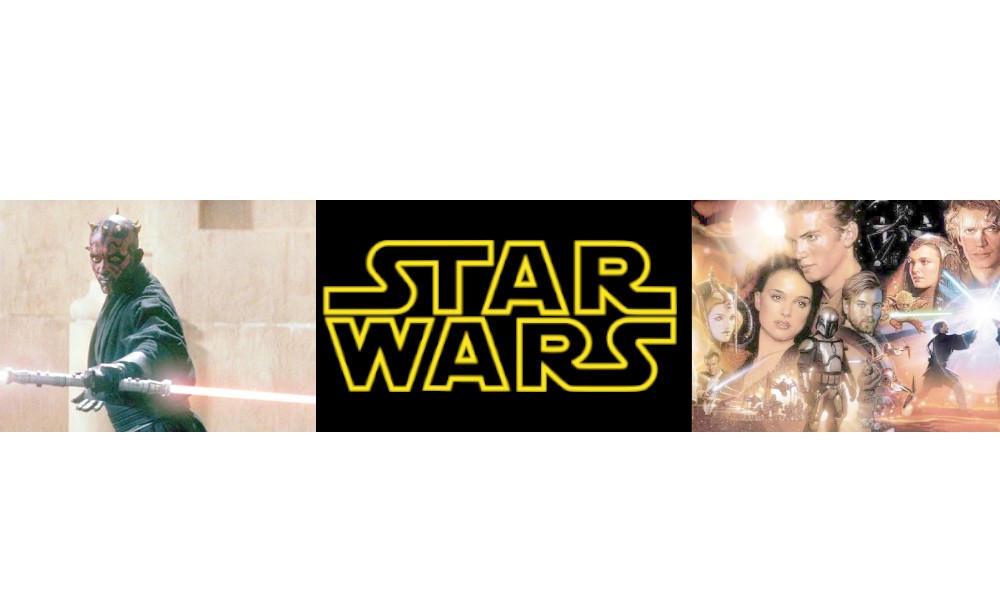
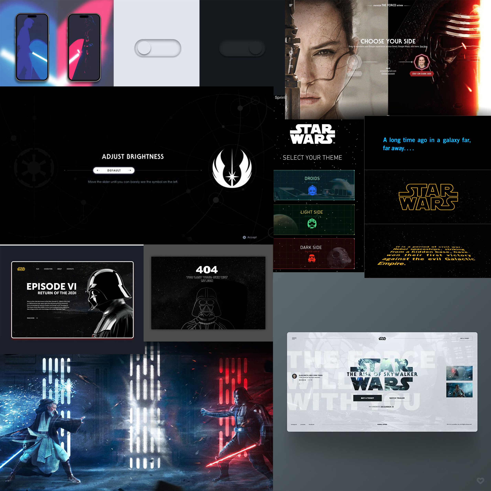
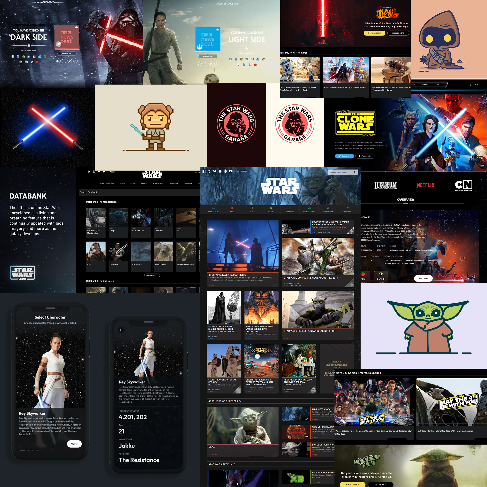
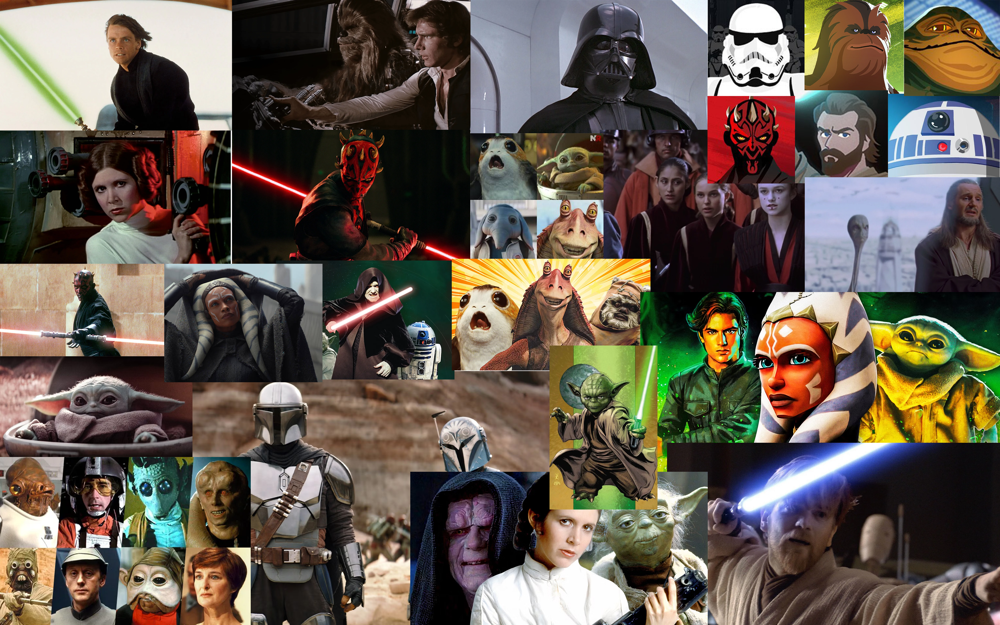

class: center, middle <!-- In deze textarea kan je in Markdown de slides aanpassen, zie https://github.com/gnab/remark/wiki voor alle mogelijkheden! --> # Inspiratie voor de digital garden Gemaakt door: Amy van duin<br> klas:206 <br> Datum: 8 September 2026<br> --- # Inhoudsopgave - Mijn onderwerp - Inspiratie links - Voorbeelden - Wat en Hoe ga ik dit vertellen - Eerste stukje content --- # Onderwerp Mijn onderwerp gaat over Star Wars. Star Wars is meer dan film. Het is een episch universum vol verhalen over hoop, de strijd tussen goed en kwaad, en de creativiteit van een sterrenstelsel ver, ver weg. Wat Star wars voor mij leuk maakt is dat je in de prequals ziet hoe de slechterik vanm een goed persoon naar een slecht persoon is gegaan. De character development is heel goed ontwikkled in star wars. Ze zijn niet bang om iemand een tragisch verleden te geven. Daarnaast zijn de lightsaber gevechten best wel gaaf om te zien. <section class="collageFrame"> <p></p> <ul> <p>Bronnen: </p> <li> <a href="https://nl.wikipedia.org/wiki/Star_Wars">Star Wars Wikipedia</a> </li> <li> <a href="https://loudandclearreviews.com/ten-good-things-star-wars-prequels/">Ten Good Things About The Star Wars Prequels</a> </li> <li> <a href="https://comicbook.com/movies/news/star-wars-10-coolest-lightsabers-list-obi-wan-kylo-ren/">10 Coolest Lightsabers in the Star Wars Movies</a> </li> </ul> </section> --- # Inspiratie links Ik heb een aantal websites gevonden met best wel gave UI-elementen ter inspiratie. Dit zijn precies het soort details die ik zelf ook wil bouwen voor mijn digital garden. Het voegt net even die extra leuke, kleine interacties toe die de pagina echt afmaken. <section class="inspirationlinks"> <a href="https://spellverse.taprootwizards.com/">Spellverse</a> <a href="https://socialbakers.com/social-wars/">Social wars</a> <a href="https://www.thorgal.com/">Thorgal</a> <a href="https://darkstarlabs.io/">Darkstarslab</a> <a href="https://2026.radiusmotion.com/">2026 Radiusmotion</a> </section> --- # Informatie Websites Om me echt goed te verdiepen in het onderwerp, ben ik op zoek gegaan naar websites die sterke informatie en toffe achtergronden bieden. Deze pagina's geven net wat meer inhoud en diepgang voor mijn digital garden: <section class="informatielinks"> <a href="hhttps://www.starwars.com/">StarWars website</a> <a href="https://starwars.fandom.com/wiki/Main_Page">Starwars Fandom</a> <a href="https://www.starwarsawakens.nl/">Starwars awakens</a> <a href="https://www.starwarsnewsnet.com/">Starwarsnewsnet</a> <a href="https://www.ea.com/games/starwars/galaxy-of-heroes">Galaxy of heroes</a> </section> --- # Voorbeelden <section class="collageSfeer1_Container"> <p></p> <div class="collageSfeer1Tekst"> <p>Ik heb gekozen voor deze verzameling omdat dit de darkside en de lightside (Goodside weergeeft). Dit is ook waar star wars om draait. De good side die vecht tegen de darkside. Dit is ook iets dat ik wil kunnen verwerken in mijn digital garden.</p> <div class="kernActie"> <h3 >Kern & Actie</h3> <p >De strijd tussen de Lightside en de Darkside. Dit kan ik terug laten komen in een interactie op de website.</p> </div> <div class="kleurSfeer"> <h3 >Kleur & Sfeer</h3> <p>Een donkere, futuristische basis met felle neon-accenten (blauw voor Jedi, rood voor Sith).</p> </div> </div> </section> --- # Bronnen afbeelding <ul> <li><a href="https://nl.pinterest.com/pin/252272016605012694/">Afbeelding 1</a></li> <li><a href="https://nl.pinterest.com/pin/459296862000561170/">Afbeelding 2</a></li> <li><a href="https://nl.pinterest.com/pin/625015254581383431/">Afbeelding 3</a></li> <li><a href="https://nl.pinterest.com/pin/935974735061077135/">Afbeelding 4</a></li> <li><a href="https://nl.pinterest.com/pin/101049585377394936/">Afbeelding 5</a></li> <li><a href="https://nl.pinterest.com/pin/314759461469751316/">Afbeelding 6</a></li> <li><a href="https://nl.pinterest.com/pin/477733472950049775/">Afbeelding 7</a></li> <li><a href="https://fontsinuse.com/uses/49364/star-wars-opening-crawl-and-titles">Afbeelding 8</a></li> <li><a href="https://dribbble.com/shots/3329226-Error-404-Star-Wars-Concept">Afbeelding 9</a></li> <li><a href="https://dribbble.com/shots/27070028-Website-mane-page-Star-Wars-Episode-VI">Afbeelding 10</a></li> </ul> --- <!-- Slide zonder titel! --> <section class="collageSfeer1_Container"> <p></p> <div class="collageSfeer1Tekst"> <p>Ik heb gekozen voor deze verzameling de kaarten die je terug ziet en de tekeningetjes van starswars. Voor mijn digital garden wil ik de blog elemten op bepaalde onderdelen zo terug laten komen als een soort kaartje. Daarbij wil ik met de tekeningetjes inetracties maken op de website.</p> <div > <h3 >Kern & Patronen</h3> <p >Een mix van strakke datakaarten (grids) en speelse 2D-illustraties. Alles draait om het online archiveren en ontdekken van het Star Wars-universum. </p> </div> <div > <h3 >Kleur & Sfeer</h3> <p>Donkere 'dark mode' interfaces gecombineerd met felle rood/blauw contrasten. Het geeft een informatief en nostalgisch gevoel.</p> </div> <div > <h3 >Terugkerende elementen</h3> <p>Grid-structuren, websitemenu's, gekruiste lichtzwaarden en bekende karakters (zoals Rey en Grogu) in wisselende grafische stijlen.</p> </div> </div> </section> --- <p></p> --- # Wat en Hoe ga ik dit vertellen <p>In deze digital garden verken je de strijd tussen de Light Side en de Dark Side. Via strakke, donkere datakaarten met rood-blauwe contrasten dwaal je door de galaxy. Je leert precies hoe de Force werkt, ontdekt de achtergrond van iconische karakters en snapt de techniek achter lichtzwaarden. Het is een groeiende, levende plek waar je zelf je pad kiest en de systemen van het Star Wars-universum leert begrijpen.</p> --- # Introtekst <h2>"Welkom in me digital garden! geen verzameling van plaatjes, maar hier leg ik je precies uit wat star wars is en hoe alles in de galaxy werkt. May the force be with you! "</h2> <!-- Laat onderstaande staan anders breekt je presentatie -->